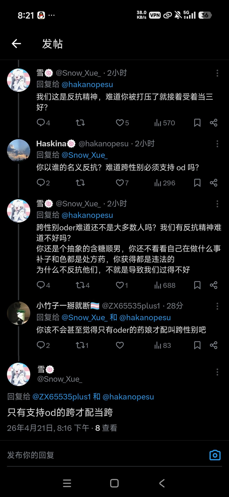
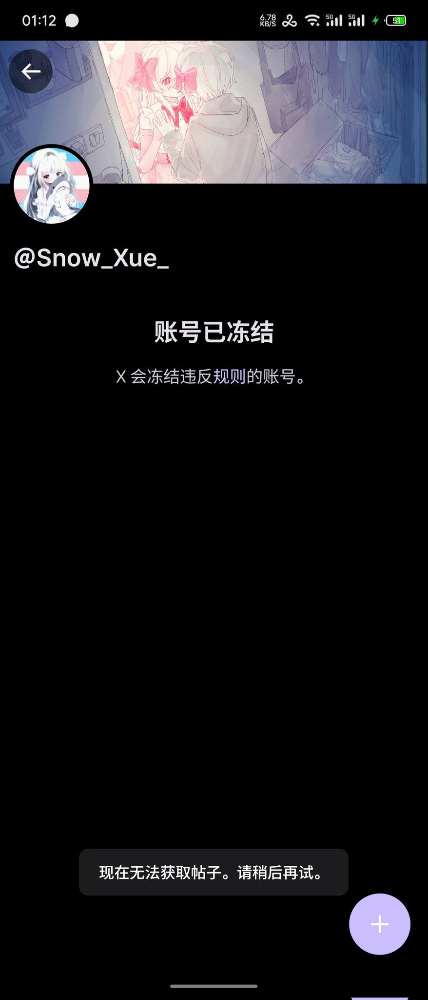

依菲雅✨𝑬𝒑𝒉𝒆𝒊𝒂🏳️⚧️
@nyaepheia
@Zh40Le1ZOOB


小竹子一掰就断🏳️⚧️
@ZX65535plus1
这个人在说什么呢😨😨 https://t.co/tvbmQ83bYi
org.z.nixpkgs.command_block
@Zh40Le1ZOOB
你看你看，现在就开始群体举报捂嘴了，想切割你自己切呗往人家身上切是不是脑残😅 https://t.co/Rihd6yUV14